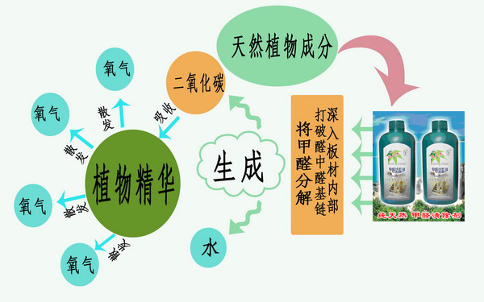
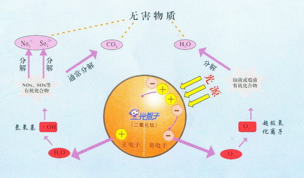

网页信息导航

1,我公司于2002年成立至今，具有丰富的污染治理经验。
2,我们拥有专业的技术人员、高素质的施工队伍、优质的产品以及完好的售后服务体系。

东方草甲醛清除剂为国内唯一一种由纯植物提取液制成的装修污染治理产品，安全无毒，不怕误饮．取自天然草本植物，采用藏红花、雪莲花、丁香、佩兰等二十余种中草药，利用现代生物技术提取而成，能深入板材内部将甲醛分解成无毒的二氧化碳和水，同时本品中所含的植物精华又将二氧化碳转换成新鲜的氧气释放，使您的室内空气清新自然，且效用长久．在湖北、河北、山东、东三省等地区的使用调查中发现，其治理后的检测结果令人惊异：１０分钟甲醛祛除率达４８％，３０分钟甲醛祛除率达77%，90分钟甲醛祛除率达83%，120分钟甲醛祛除率达90%以上
１、主要成分及原理
本品取自天然草本植物，采用藏红花、雪莲花、丁香、佩兰等二十余种中草药，利用现代生物技术提取而成，能深入板材内部将
甲醛分解成无毒的二氧化碳和水，同时本品中所含的植物精华又将二氧化碳转换成新鲜的氧气释放，使您的室内空气清新自然，且效用长久
。
２、特点：
（１）国内唯一的以纯植物提取液治理装修污染的产品。
（２）不怕误饮，安全无毒。
（３）经国家权威部门检测甲醛祛除迅速有效，被中国室内监测中心认证为＂绿色室内产品＂。

一、光智子是日本进口光触媒，能够彻底清除因装修而产生的甲醛、苯、氨、TVOC等有机毒气污染。全国政协副主席、澳门总商会会长——马万祺是光智子在东南亚地区的总代理。
二、智子的反应原理及主要成分
反应原理图
光智子（光触媒）是一种无色透明的原液，主要成分是二氧化钛，通过专用的喷涂设备喷涂于室内、车内，形成透明的二氧化钛涂膜，吸收光线后，涂膜表面产生正、负电子，分别与空气中的水分和氧结合，他们能氧化分解所有的有机化合物和一部分无机物，形成无毒二氧化碳和水，随气流排出室外。
三、功效：
1,家庭群发疾病综合症：症状：家人共有一种疾病，而且离开这个环境后，症状就有明显变化和好转;
2、宠物死亡综合症：症状：新搬家后，家养的宠物猫、狗甚至热带鱼莫名其妙的死掉，而且邻居家的也是这样；
3、植物枯萎综合症：症状：新装修后，室内植物不易成活，叶子发黄、枯萎、特别是一些生命力很强的植物也难以正常生长。
四、特点：
1、安全无毒：经过美国FDA食品检验中心认证，二氧化钛为安全物质，对人体绝对安全。它广泛用于食品、日化、医药、养殖行业，在日本厚生省，是法令指定的食品添加剂之一。
2、永久：一次处理，效用长久。光智子（光触媒）本身作为一种催化剂，自身不参加反应，不会消耗掉，具有长期的作用。 涂膜无色透明，不影响被处理物体表面外观。附着力强，除非用刀刮，否则会永久附着于物体表面。
